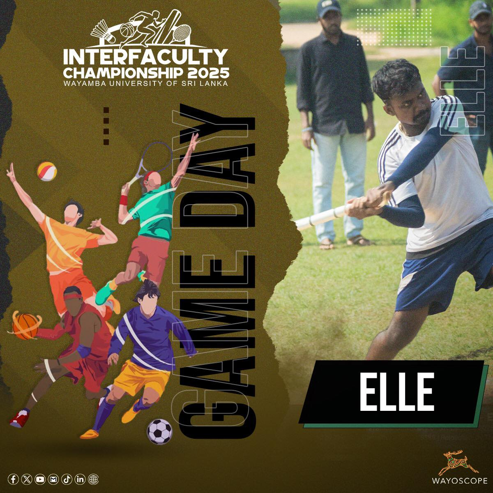
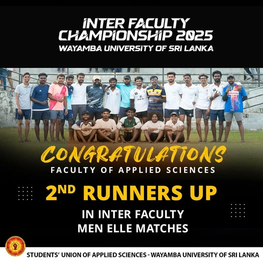
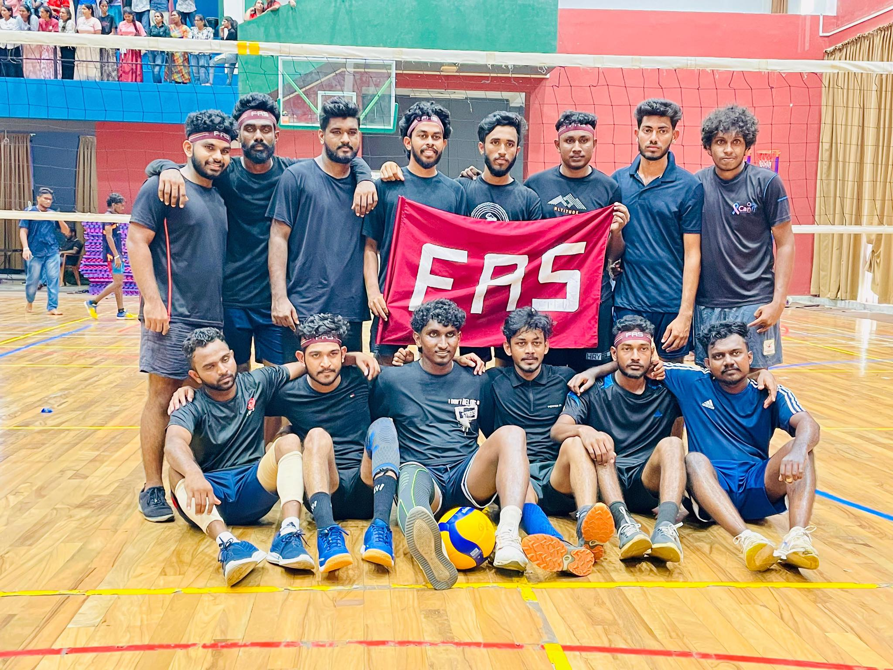
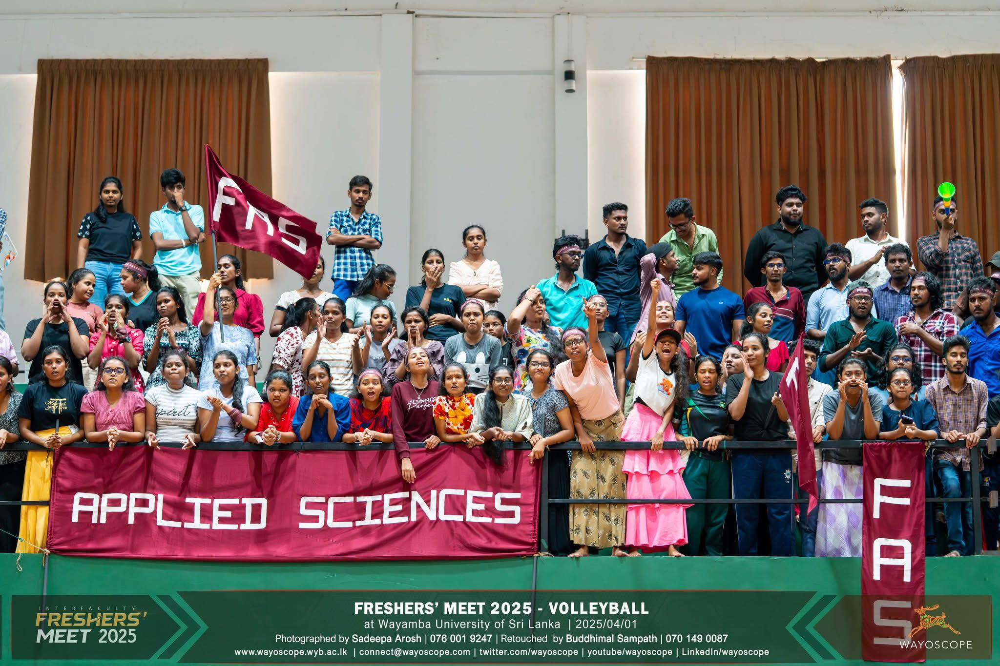

Wayamba University of Sri Lanka
Physical Education Unit
Sports Council
The Physical Education Unit (PE Unit) of Wayamba University of Sri Lanka
is responsible
for all sports and recreational activities within the
university.The unit promotes student participation
in sports, organizes
inter-faculty competitions, prepares teams for national and university-level
championships, and supports student-athletes through training and
development programs.
General Info about the Sports Council / PEU
The PEU is the department responsible for promoting sports, fitness and recreation for students and staff at WUSL.
The head unit is located at WUSL 's Kuliyapitiya premises; there is also a sub-unit at the Makandura premises.
The aim is to develop the physical, mental and sociological well-being of individuals through sports, recreation and fitness.
The PEU organizes various programmes and events: inter‑faculty championships, freshers championships, university games (including national/international level),
fitness programmes, and an annual Colours Awarding Ceremony for outstanding athletes.